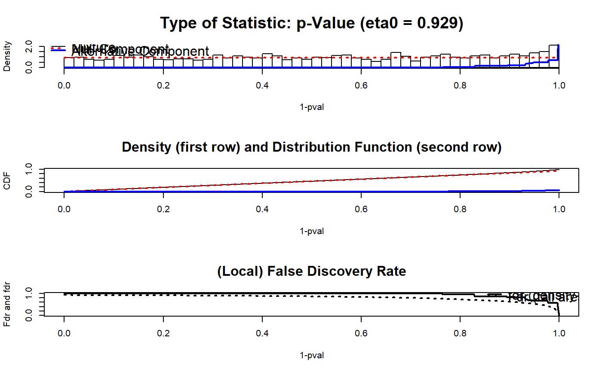

comp.2.cc.fdr.RdExport differential correlations of comparison of two correlation matrices
comp.2.cc.fdr(output.file = "res.txt", data1, data2, method = "pearson", p.adjust.methods = "local", threshold = 0.05)
| output.file | can specify file name of the results exported |
|---|---|
| data1 | data matrix under condition 1 |
| data2 | data matrix under condition 2 |
| method | c("pearson", "spearman", "kendall") |
| p.adjust.methods | c("local", holm", "hochberg", "hommel", "bonferroni", "BH", "BY", "fdr", "none") |
| threshold | a threshold of significance levels of differential correlation |
a text file
Fukushima, A. Gene (2013) 518, 209-214
data(AraMetRoots) AraMetRoots[AraMetRoots==0] <- NA AraMetRootsImp <- completeObs(pca(log2(AraMetRoots), nPcs=3, method="ppca")) comp.2.cc.fdr(output.file="res.txt", AraMetRootsImp[,1:17], method="spearman", AraMetRootsImp[,18:37], threshold=0.05)#> Step 1... determine cutoff point #> Step 2... estimate parameters of null distribution and eta0 #> Step 3... compute p-values and estimate empirical PDF/CDF #> Step 4... compute q-values and local fdr #> Step 5... prepare for plotting#> #> Step 1... determine cutoff point #> Step 2... estimate parameters of null distribution and eta0 #> Step 3... compute p-values and estimate empirical PDF/CDF #> Step 4... compute q-values and local fdr #> Step 5... prepare for plotting#> #> Step 1... determine cutoff point #> Step 2... estimate parameters of null distribution and eta0 #> Step 3... compute p-values and estimate empirical PDF/CDF #> Step 4... compute q-values and local fdr #> Step 5... prepare for plotting#>